Pd Manual: theory of operation
The purpose of this chapter is to describe Pd’s design and how it is supposed to work. Practical details about how to obtain, install, and run Pd are described in the next chapter. Links to more extensive guides (and to more theoretical information about computer music) can be found in the previous chapter.
overview
Pd is a real-time graphical programming environment for audio and graphical processing. It resembles the Max/MSP system but is much simpler and more portable; also Pd has two features not (yet) showing up in Max/MSP: first, via Mark Dank’s GEM package, Pd can be used for simultaneous computer animation and computer audio. Second, an experimental facility is provided for defining and accessing data structures.
main window, canvases, and printout
When Pd is running, you’ll see a main “Pd” window, and possibly one or more “canvases” or “patches”. The main Pd window looks like this:
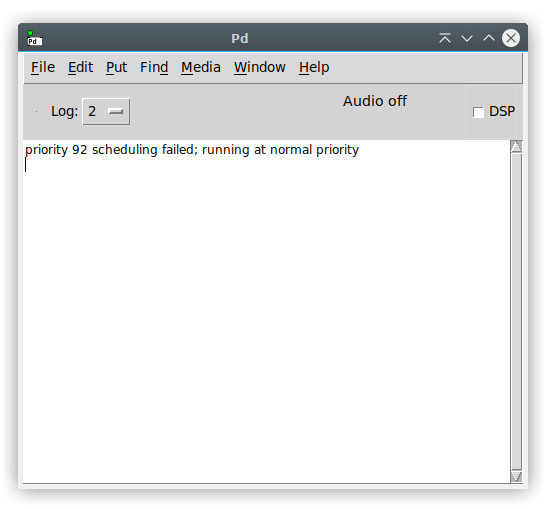
The bottom part of the Pd window is an area for printout from objects in patches, and/or for messages from Pd itself. The menus and console font size can be changed using the Edit/Font menu dialog when the Pd window is focused. Make your adjustments if you are having troubles reading on HiDPI screens.
Pd documents are called “patches” or “canvases.” Each open document has one main window and any number of sub-windows. The sub-windows can be opened and closed but are always running whether you can see them or not. Here is a simple Pd patch:
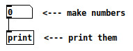
There are four text boxes in this patch: a number box (showing zero), an object box showing “print,” and two comments. The number box and the object box are connected, the number box’s output to the print box’s input. Boxes may have zero or more inputs and/or outputs, with the inputs on top and the outputs on bottom.
Pd’s printout appears on the main “Pd” window, unless you redirect it elsewhere.
object boxes
Pd patches can have four types of boxes: object, message, GUI, and comment .
You make objects by typing text into object boxes. The text is divided into atoms separated by white space. The first atom specifies what type of object Pd will make, and the other atoms, called creation arguments , tell Pd how to initialize the object. If you type for example,
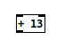
the “+” specifies the class of the object. In this case the object will be the kind that carries out addition, and the “13” initializes the amount to add.
Atoms are either numbers or symbols like “+”. Anything that is not a valid number is considered a symbol. Valid numbers may or may not have a decimal point (for instance, 12, 15.6, -.456), or may be written in exponential notation (such as “4.5e6”, which means “4.5 multiplied by 10 six times, i.e., 4500000). Negative exponentials divide by 10 (so that 1.23e-5 comes to 0.0000123).
Non-valid numbers which are read as symbols include things like “+5” and “0..6” as well as words and names such as “Zack” or “cat”. The symbols “gore”, “Gore”, and “GORE” are all distinct.
The text you type into an object box determines how many and what kinds of inlets and outlets the object will have. Some classes (like “+” always have a fixed arrangement of inlets and outlets, and in the case of other classes, the inlets and outlets will depend on the creation arguments.
Here for example is a simple MIDI synthesizer:
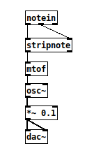
This patch mixes control objects (notein, stripnote, and ftom) with tilde objects osc~, *~, and dac~. The control objects carry out their function sporadically, as a result of one or more type of event . In this case, incoming MIDI note messages set off the control computation. The result of the computation is, when the note happens to be a “note on” (and not a “note off”), to compute the frequency in cycles per second and pass it on to the oscillator (“osc~”).
The second half of the patch, the osc~, *~, and dac~ objects, compute audio samples, in the same way as an analog synthesizer works. The osc~ object is acting as the interface between the two regimes, in that it takes control messages to set its frequency but talks to “*~” using an audio signal. Audio signals aren’t sporadic; they are continuous streams of numbers. As a result tilde objects act under very different rules from control objects. The audio portion of the patch is always running, whether MIDI messages arrive or not. On the other hand, the function of control computations is to insert calculations between the audio computation which may change audio computation parameters such as the frequency of an oscillator.
The connections in the patch (the lines between the boxes) are also of two types: control and signal. The type of connection depends on the outlet it comes from. Signal connections are represented by thicker lines than control connections; in the patch above, the two bottom connections are signal and the others are control. In general, a control connection may be made to a signal inlet; if numbers are sent over it they are automatically converted to signals. Signal connections may not be made to control inlets; some sort of explicit conversion must be specified.
message and GUI boxes
The border of a box tells you how its text is interpreted and how the box functions. Object boxes (as in the previous example) use the text to create objects when you load a patch or type text onto a new one. If you retype the text in an object box, the old one is discarded and a new one is created, using the new creation arguments. The contents of an object box describe a message which is sent to Pd to create the object.
Message boxes interpret the text as a message to send whenever the box is activated (by an incoming message or with the mouse.) The message may be sent many times while the patch is running (as opposed to object boxes whose message is used once to create the object). Instead of going straight to Pd, the message box’s message (or messages) go either to the box’s outlet or to other specified receiving objects. In the example below, the message box, when clicked, sends the message “21” to an object box which adds 13 to it.
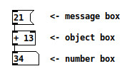
The third box shown is a GUI (“graphical user interface”) box. GUI boxes come in many forms including number boxes (as in this example), toggles, sliders, and so on. Whereas the appearance of an object or message box is static when a patch is running, a number box’s contents (the text) changes to reflect the current value held by the box. You can also use a number box as a control by clicking and dragging up and down, or by typing values in it. (There are also shift- and alt-click actions; see getting help to find out how to look this up).
In addition to numbers, Pd defines GUI boxes to display and edit symbols or arbitrary lists of atoms.
patches and files
When you save a patch to a file, Pd doesn’t save the entire state of all the objects in the patch, but only what you see: the objects’ creation arguments and their interconnections. Certain data-storage objects have functions for reading and writing other files to save and restore their internal state.
Pd finds files using a path which can be specified as part of Pd’s startup arguments. The path specifies one or more directories, separated by colons (semicolons if you’re using windows.) Most objects which can read files search for them along the search path, but when Pd writes files they go to the directory where the patch was found.
editing Pd patches
edit and run mode
A patch can be in edit or run mode; this really only affects how mouse clicks affect the patch. In edit mode, clicking and dragging selects and moves boxes or makes and cuts connections; in run mode clicking on boxes sends them messages which they react to in different ways. In run mode, number and message boxes can be used as controls. Normally, when you are in a performance you will stay in run mode; to change the patch you go to edit mode.
creating boxes
You can create boxes (objects, messages, GUIs, and comments) using the “put” menu. Note the handy accelerators. Object and message boxes are empty at first; drag them where you want them and type in the text. The GUI objects (which come in several flavors) require no typing; just create and place them.
You will often find it more convenient to select a box and “duplicate” it (in the Edit menu) than to use the “Put” menu. If you select and duplicate several items, any connections between them will be duplicated as well.
the selection
Boxes in a Pd window may be selected by clicking on them. To select more than one object you may use shift-click or click on a blank portion of the window and drag the cursor to select all objects within a rectangle.
Clicking on an unselected object, message, or comment box makes the text active, i.e., ready to be text edited. (If you select using the rectangle method, the text isn’t activated.) Once you’ve activated a text box, you may type into it (replacing the selected text) or use the mouse to change the selection.
You may also select a single connection (patch cord) by clicking on it. You can’t have connections and boxes selected simultaneously.
deleting, cutting, and pasting
If you select a box, a connection, or several boxes, and if you haven’t made any text active, you can “delete” the selection by hitting the backspace or delete key. You can also “cut” “copy” and “paste” using menu items. Notice that pasting puts the new object(s) right down on top of the old ones.
The “duplicate” menu item performs a copy and paste with a small offset so you can see the new boxes. You can drag them together to a new place on the screen.
You can cut and paste between windows within Pd but cut/paste isn’t integrated with the OS in any way. Cut/copy/paste for activated text in boxes isn’t implemented yet, although in Linux at least you can “X-paste” into and out of “text” dialogs (created with the “edit text” menu item.)
changing the text
To change a text item, you can select it and then edit the text. If you only click once, the entire text is selected and your typing will replace everything. Click again and drag to select a portion of the text to retype.
If there’s more than a small amount of text (in a comment, for example) you might want to select the text and choose “text editor” from the Edit menu, which opens a text editing window with a copy of the text in it. Hitting “send” in that window is exactly equivalent to retyping the text into Pd; you can send it to more than one box in sequence if you want.
If you click a box and move the mouse without releasing the button this displaces the entire box. If you wish to displace a box which is already selected, first de-select the box by clicking outside it; otherwise you will be selecting text instead of moving the box.
The updated text only becomes part of the patch when you de-select the object. Changing the text in an “object” box deletes the old object and creates a new one; the internal state of the old one is lost.
connecting and disconnecting boxes
To make a connection between two boxes, click on any outlet of the first one, drag toward an inlet of the second one, and release. You can release the mouse button anywhere within the target object and the connection will be made to the nearest inlet.
Connections are broken by selecting them and using “cut” or the backspace or delete key.
popup menu for properties, open, and help
All the “clicking” mentioned above is done with the left mouse button. The right button, instead, gives a popup menu offering “properties,” “open,” and “help”. (For Macintosh users who may only have one button on their mouse, double-clicking is mapped to right-click.)
Selecting “help” on an object gets a Pd patch that demonstrates how to use it. “Help” for the canvas as a whole (right-clicking outside any object) gives a list of all built-in objects.
The “open” menu item is only enabled if you right-click on a subpatch (see below) and causes Pd to open it. Ordinary subpatches may also be opened by clicking on them, but for “graph-on-parent” ones, this is the only way to do it.
The “properties” dialog allows you to change certain settings of GUI objects, or of the patch itself (by clicking outside any box.)
miscellaneous
Control-q “quits” Pd, but asks you to confirm the quit. To quit without having to confirm, use command-shift-Q.
messages
In Pd, objects intercommunicate by sending messages and/or audio signals. Pd messages are sporadic, like MIDI messages or music N “Note cards.”
anatomy of a message
Messages contain a selector followed by any number of arguments. The selector is a symbol, which appears in the patch as a non-numeric string with no white space, semicolons, or commas. The arguments may be symbols or numbers. Numbers in Pd are kept in 32-bit floating point, so that they can represent integers exactly between −16777216 and 16777216. (In Max, there are separate data types for integers and floating point numbers; Pd uses only float.)
When a message is passed to something (which is often an inlet of a box but could be anything that can receive a message), the selector of the message is checked against the receiver. If the receiver recognizes messages of that selector, it carries out some corresponding action. For instance, here is a “float” object:
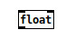
The two rectangles at the top are usually both called “inlets” but the one at the left directs incoming messages to the “float” object itself, whereas the one at the right directs messages to an auxiliary “inlet” object. The float object proper (represented by the left-hand inlet) accepts messages with selector “float” and “bang”. The right-hand inlet takes only the message selector “float”. These two selectors, along with “symbol” and “list”, are usually used to denote an object’s main action, whatever it may be, so that objects can be interconnected with maximum flexibility.
It is possible to type messages which start with a number, which cannot be used as a selector. A single number is always given the “float” selector automatically, and a message with a number followed by other arguments is given the selector “list”.
depth first message passing
In Pd whenever a message is initiated, the receiver may then send out further messages in turn, and the receivers of those messages can send yet others. So each message sets off a tree of consequent messages. This tree is executed in depth first fashion. For instance in the patch below:
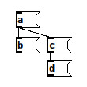
the order of arrival of messages is either A-B-C-D or A-C-D-B. The “C” message is not done until the “D” one is also, and the “A” is not done until all four are. It is indeterminate which of “B” or “C” is done first; this depends on what order you made the connections in (in Max, it’s automatically sorted right to left).
Message-passing can give rise to infinite loops of the sort shown here:
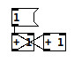
Here the left-hand “+” can’t finish processing until the right-hand one has been sent the result “2”, which can’t finish processing that until the left-hand one has been sent “3”, and so on. Pd will print an error message reporting a “stack overflow” if this happens.
However, it is legal to make a loop if there is a “delay” object somewhere in it. When the “delay” receives a message it schedules a message for the future (even if the time delay is 0) and is then “finished;” Pd’s internal scheduler will wake the delay back up later.
hot and cold inlets and right to left outlet order
With few exceptions (notably “timer”), objects treat their leftmost inlet as “hot” in the sense that messages to left inlets can result in output messages. So the following is a legal (and reasonable) loop construct:
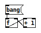
Here the “f” is an abbreviation for “float”. Note that the “+ 1” output is connected to the right-hand inlet of “f”. This “cold” inlet merely stores the value for the next time the “f” is sent the “bang” message.
It is frequently desirable to send messages to two or more inlets of an object to specify its action. For instance, you can use “+” to add two numbers; but to do it correctly you must make sure the right hand inlet gets its value first. Otherwise, when the left hand side value comes in, “+” will carry out the addition (since the left hand inlet is the “hot” one) and will add this value to whatever was previously sitting in the right hand inlet.
Problems can arise when a single outlet is connected (either directly or through arbitrarily long chains of message passing) to different inlets of a single object. In this case it is indeterminate which order the two inlets will receive their messages. Suppose for example you wish to use “+” to double a number. The following is incorrect:
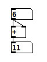
Here, I connected the left inlet before connecting the right hand one (although this is not evident in the appearance of the patch.) The “+” thus adds the new input (at left) to the previous input (at right).
The “trigger” object, abbreviated “t”, can be used to split out connections from a single outlet in a determinate order. By convention, all objects in Pd, when sending messages out more than one outlet, do so from right to left. If you connect these to inlets of a second object without crossing wires, the second object will get its leftmost inlet last, which is usually what you want. Here is how to use “trigger” to disambiguate the previous example:
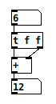
“Cold” (non-leftmost) inlets are almost universally used to store single values (either numbers or symbols.) With the exception of “line” and “line~”, these values are “sticky,” i.e., once you set the value it is good until the next time you set it. (The “line” exception is for sanity’s sake.)
One more question sometimes comes up in execution order, which is the order in which two messages are sent to a single “cold” inlet. In this situation, since the messages are merged, the last value to be received is the value that is used in the computation.
message boxes
Message boxes are text boxes in which you type a message. When the message box is activated, either by clicking on it or sending something to its inlet, the message or messages are sent, either to the message box’s outlet or elsewhere as specified.
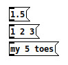
The first of the message boxes above contains the single number 1.5; this message has an implicit selector of “float.” The second is a list with three numbers in it, and in the third, the selector is “my” and the two arguments are the number 5 and the symbol “toes.”
Multiple messages may be separated by commas as shown:
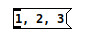
Here the three messages are the numbers 1, 2, and 3, and they are sent in sequence (with no intervening time between them, as with the “trigger” object, and having depth-first consequences so that whatever chain of actions depending on “1” takes place before anything depending on “2” and so on.)
Semicolons may also separate messages. A message following a semicolon must specify a symbol giving a destination (in other words, semicolons are like commas except that they clear the “current destination” so that the next message specifies a new one). The “current destination” is at first the message box’s own outlet. In the example below, the leading semicolon immediately redirects messages from the outlet to an object named “fred” (which is here a receive object), and likewise the next message is sent to “sue.”
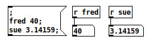
Certain other objects (Pd windows, for example, and arrays) have Pd names and can be sent messages this way. Also, the special object “pd” is defined to which you may send messages to start and stop DSP.
You can put variables in message boxes as shown below:
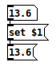
Here, “$1”, etc., refer to the arguments of the arriving message (and aren’t defined if you send a “bang” message or if you click on the message box to activate it.) Dollar sign variables are either numbers or symbols depending on the incoming message; if symbols, you may even use them to specify variable message selectors or destinations.
audio signals
Using Pd you can build audio patches which can synthesize musical sounds, analyze incoming sounds, process incoming sounds to produce transformed audio outputs, or integrate audio processing with other media. This section describes how Pd treats audio signals.
sample rate and format
Pd’s audio signals are internally kept as 32-bit floating point numbers, so you have all the dynamic range you could want. However, depending on your hardware, audio I/O is usually limited to 16 or 24 bits. Inputs all appear between the values of -1 and 1; and output values will be clipped to that range. Pd assumes a sample rate of 44100 unless you override this ( in Pd’s command line or in the “audio setup” dialog).
Pd can read or write samples to files either in 16-bit or 24-bit fixed point or in 32-bit floating point, in WAV, AIFF, or AU format, via the soundfiler, readsf, and writesf objects.
tilde objects and audio connections
Audio computations in Pd are carried out by “tilde objects” such as “osc~” whose names conventionally end in a tilde character to warn you what they are. Tilde objects can intercommunicate via audio connections. When audio computation is turned on, or when you change the audio network while audio is on, Pd sorts all the tilde objects into a linear order for running; then this linear list is run down in blocks of 64 samples each; at 44100 Hz. this means the audio network runs every 1.45 milliseconds.
Inlets or outlets are configured in Pd either for messages or audio; it’s an error to connect an audio outlet to a non-audio inlet or vice versa; usually these errors are detected at “sort time” when audio is started or the network changed with audio running. An object’s leftmost inlet may accept both audio and messages; any other inlet is either one or the other.
The audio network, that is, the tilde objects and their interconnections, must be acyclic. If there are loops, you will see the error message at “sort time.” When errors are reported at sort time there is no easy way to find the source of the error. You can build algorithms with feedback using nonlocal signal connections.
Your subpatches can have audio inlets and outlets via the inlet~ and outlet~ objects.
converting audio to and from messages
If you want to use a control value as a signal, you can use the sig~ object to convert it. The +~, -~, *~, /~, osc~, and phasor~ objects can be configured to take control or signal inputs.
The other direction, signal to control, requires that you specify at what moments you want the signal sampled. This is handled by the snapshot~ object, but you can also sample a signal with tabwrite~ and then get access it via tabread or tabread4 (note the missing tildes!). There are also analysis objects, the simplest of which is “env~”, the envelope follower.
switching and blocking
You can use the switch~ or block~ objects to turn portions of your audio computation on and off and to control the block size of computation. There may be only one switch~ or block~ object in any window; it acts on the entire window and all of its subwindows, which may still have their own nested switch~/block~ objects. Switch~ and block~ take a block size and an overlap factor as arguments; so for instance, “block~ 1024 4” specifies 1024 sample blocks, overlapped by a factor of 4 relative to the parent window. Switch~ carries a small computational overhead in addition to whatever overhead is associated with changing the block size.
Larger block sizes than 64 should result in small increases in run-time efficiency. Also, the fft~ and related objects operate on blocks so that setting the block size also sets the number of FFT channels. You may wish to use block sizes smaller than 64 to gain finer resolutions of message/audio interaction, or to reduce “block delay” in feedback algorithms. At the (untested) extreme, setting the block size to one allows you to write your own recursive filters.
You can use switch~ to budget your DSP computations; for instance you might want to be able to switch between two synthesis algorithms. To do this, put each algorithm in its own subpatch (which can have sub-sub patches in turn, for a voice bank for instance), and switch each one off as you switch the other one on. Beware of clicks; if you have a line~ controlling output level, give it time to ramp to zero before you switch it off or it will be stuck at a nonzero value for the next time it comes back on.
When a subpatch is switched off its audio outputs generate zeros; this costs a fairly small overhead; a cheaper way to get outputs is to use throw~ inside the switched module and catch~ outside it.
nonlocal signal connections
You may wish to pass signals non-locally, either to get from one window to another, or to feed a signal back to your algorithm’s input. This can be done using throw~/catch~, send~/receive~, or delwrite~/delread~ pairs. Throw~ and catch~ implement a summing bus; throw~ adds into the bus and catch~ reads out the accumulated signal and zeros the bus for the next time around. There can be many throw~ objects associated with a single catch~, but a throw~ can’t talk to more than one catch~. You can reset the destination of a throw~ if you want to.
Send~ just saves a signal which may then be receive~d any number of times; but a receive~ can only pick up one send~ at a time (but you can switch between send~s if you want.)
Don’t try to throw~ and catch~ or send~ and receive~ between windows with different block sizes. The only re-blocking mechanisms which are well tested are inlet~ and outlet~.
When you send a signal to a point that is earlier in the sorted list of tilde objects, the signal doesn’t get there until the next cycle of DSP computation, one block later; so your signal will be delayed by one block (1.45 msec by default.) Delread~ and delwrite~ have this same restriction, but here the 1.45 msec figure gives the minimum attainable delay. For non-recursive algorithms, a simple flanger for example, you might wish to ensure that your delread~ is sorted after your delwrite~. The only way to ensure this is to create the delread~ after you created the delwrite~; if things get out of whack, just delete and re-create the delread~.
scheduling
Pd uses 64-bit floating point numbers to represent time, providing sample accuracy and essentially never overflowing. Time appears to the user in milliseconds.
audio and messages
Audio and message processing are interleaved in Pd. Audio processing is scheduled every 64 samples at Pd’s sample rate; at 44100 Hz. this gives a period of 1.45 milliseconds. You may turn DSP computation on and off by sending the “pd” object the messages “dsp 1” and “dsp 0.”
In the intervals between, delays might time out or external conditions might arise (incoming MIDI, mouse clicks, or whatnot). These may cause a cascade of depth-first message passing; each such message cascade is completely run out before the next message or DSP tick is computed. Messages are never passed to objects during a DSP tick; the ticks are atomic and parameter changes sent to different objects in any given message cascade take effect simultaneously.
In the middle of a message cascade you may schedule another one at a delay of zero. This delayed cascade happens after the present cascade has finished, but at the same logical time.
computation load
The Pd scheduler maintains a (user-specified) lead on its computations; that is, it tries to keep ahead of real time by a small amount in order to be able to absorb unpredictable, momentary increases in computation time. This is specified using the “audiobuffer” or “frags” command line flags (see getting Pd to run ).
If Pd gets late with respect to real time, gaps (either occasional or frequent) will appear in both the input and output audio streams. On the other hand, disk streaming objects will work correctly, so that you may use Pd as a batch program with soundfile input and/or output. The “-nogui” and “-send” startup flags are provided to aid in doing this.
Pd’s “realtime” computations compete for CPU time with its own GUI, which runs as a separate process. A flow control mechanism will be provided someday to prevent this from causing trouble, but it is in any case wise to avoid having too much drawing going on while Pd is trying to make sound. If a sub-window is closed, Pd suspends sending the GUI update messages for it; but not so for miniaturized windows as of version 0.32. You should really close them when you aren’t using them.
determinism
All message cascades that are scheduled (via “delay” and its relatives) to happen before a given audio tick will happen as scheduled regardless of whether Pd as a whole is running on time; in other words, calculation is never reordered for any real-time considerations. This is done in order to make Pd’s operation deterministic.
If a message cascade is started by an external event, a time tag is given it. These time tags are guaranteed to be consistent with the times at which timeouts are scheduled and DSP ticks are computed; i.e., time never decreases. (However, either Pd or a hardware driver may lie about the physical time an input arrives; this depends on the operating system.) “Timer” objects which measure time intervals measure them in terms of the logical time stamps of the message cascades, so that timing a “delay” object always gives exactly the theoretical value. (There is, however, a “realtime” object that measures real time, with nondeterministic results.)
If two message cascades are scheduled for the same logical time, they are carried out in the order they were scheduled.
semantics
This section describes how objects in Pd are created, how they store data and how object and other boxes pass messages among themselves.
creation of objects
The text in a box has a different function depending on whether it is a message, atom (number/symbol), or object box. In message boxes the text specifies the message or messages it will send as output. In atom boxes the text changes at run time to show the state of the box, which is either a number or a symbol.
In an object box, as in a message box, the text specifies a message; but here the message is to be passed to Pd itself, once, and the message’s effect is to create the object in question. When you open a file, all the objects created are created using their text as “creation messages.” If you type a new message into an object box (or change it), the old object is destroyed and the message is used to create the new one.
The selector of the message (the first word in the message) is a selector which Pd interprets to mean which type of object to create. Any message arguments (called “creation arguments”) are used to parameterize the object being created. Thus in “makenote 64 250” the selector “makenote” determines the class of object to create and the creation arguments 64 and 250 become the initial velocity and duration.
persistence of data
Among the design principles of Pd is that patches should be printable, in the sense that the appearance of a patch should fully determine its functionality. For this reason, if messages received by an object change its action, since the changes aren’t reflected in the object’s appearance, they are not saved as part of the file which specifies the patch and will be forgotten when the patch is reloaded. In the same way, if you delete and then recreate an object the original object’s state is not retained but is instead reinitialized (possibly as specified by creation arguments.)
An exception is made for subpatches whose “state” is the configuration of the subpatch; as a special case, this configuration is restored when the patch is read from a file. Also, if you rename the subpatch, for instance typing “pd jane” instead of “pd spot,” the contents of the patch are preserved and only the text in the object box and the window title of the subpatch are changed.
It is probably bad style to specify creation arguments ala “makenote 64 250” if you are going to override them later; this is confusing to anyone who tries to understand the patch.
message passing
Messages in Pd consist of a selector (a symbol) and zero or more arguments (which may be symbols or numbers). To pass a message to an object, Pd first checks the selector against the class of the object. Message boxes all are of one class and they all take the same incoming messages and dispense them according to their state, that is, the text typed into the box. The same holds for atom boxes (number or symbol) except that their state may change (it consists of the number or symbol showing).
Object boxes may have many different classes. The class is usually determined by the selector of the creation message, i.e., the first atom of the creation message which is usually a symbol.
Each class comes with a fixed collection of messages it may be sent. For example, the “float” or “f” object takes “bang” and “float.” These messages are sent to “float” objects (objects whose class is float) via the leftmost, hot inlet. (The right inlet is a separate, auxiliary object.) Objects of class “float” respond to the message “bang” by outputting their current value, that is, by sending a “float” message to their outlet. They respond to “float” messages by setting their value and then outputting it.
Each other class (like “float”) in Pd has its own protocol for responding to messages it is sent, and may take “float” and “bang” messages, or others in addition or instead of them.
inlets and lists
The leftmost connection point at the top of most objects represents the object itself. Any other dark rectangle is a separate object called an “inlet” although in Pd there are 4 individual inlet classes. The class of the inlet determines which messages it will take: symbol, float, or other; and the inlet forwards the message either to the object proper or to some proxy, usually one that the object creates for the occasion.
Unless they arrange otherwise by defining a “list” method, objects respond to the “list” message by distributing the arguments of the message to their inlets, except for the first argument which is passed as a “float” or “symbol” message to the object proper.
dollar signs
In message or object boxes, message arguments starting with a dollar sign and a number (like “$1” or “$3-bazoo”) are variables which are substituted with values supplied as part of the environment the message is passed in. In the case of message boxes, the environment consists of the arguments of the “list” message (possibly extrapolated from “bang,” “float,” or other) that the message box is responding to. Thus, if a message box gets “23 skidoo” and if it contains the text, “$2 until $1,” out comes the message, “skidoo until 23.”
Object boxes contain text which forms a message to be sent to Pd to create and initialize the object. Here, $1, etc., are taken from the context in which the patch was loaded. When the patch is a new document or opened from a file the “$” variables are undefined. But if the patch is an abstraction (see the next section) they are taken from the abstractions’ creation arguments.
Constructions such as “$1-x” are expanded by string concatenation. This is the mechanism for making local variables. In particular, $0 is a counter, where every patch gets its own value. In an abstraction this guarantees a unique ID number to that abstraction, so sends and receives with names like “$0-bear” can be used as local send/receive pairs. This is also useful for things like array names, value names and text names (as defined in the text object).
Occasionally you may want to have double or triple substitutions; this can be done one stage at a time by nesting abstractions (with each subpatch adding its own $-variable to a symbol and passing that on as argument to a further abstraction.)
For example, if you want to get dog-food, dog-ears, and cat-food, for example, have an abstraction “a1” that invokes an abstraction “a2” twice, as “a2 $1-food” and “a2 $1-ears”, and then in a third patch call a1 twice, as “a1 cat” and “a1 dog”. Inside the four “a2” copioes, $1 will evaluate to “dog-food”, “cat-food”, “dog-ears”, and “cat-ears”.
subpatches
Pd offers two mechanisms for making subpatches, called “one-off subpatches” and “abstractions.” In either case the subpatch appears as an object box in a patch. If you type “pd” or “pd my-name” into an object box, this creates a one-off subpatch. For instance, in this fragment:
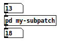
the box in the middle, if clicked on, opens the sub-patch shown here:
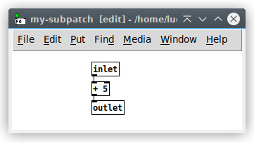
The contents of the subpatch are saved as part of the parent patch, in one file. If you make several copies of a subpatch you may change them individually.
The objects, “inlet,”, “inlet~,” “outlet,” and “outlet~,”, when put in a subpatch, create inlets and outlets for the object box containing the subpatch. This works equally for one-off subpatches and abstractions and only accept control data messages. The inlet~ and outlet~ versions create inlets and outlets for audio signals. Note you can also mix control messages in an inlet~ with the ‘fwd’ argument but a signal outlet only takes signals. Inlets and outlets appear on the invoking box in the same left-to-right order as they appear in the subpatch.
abstractions
To make an abstraction, save a patch with a name such as “abstraction1.pd” and then invoke it as “abstraction1” in an object box:
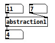
Here we’re invoking a separate file, “abstraction1.pd”, which holds the patch shown here (the border is the same as for the subpatch above):
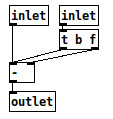
You may create many instances of “abstraction1” or invoke it from several different patches; and changing the contents of “abstraction1” will affect all invocations of it as they are created. An analogy from the “c” programming language is that one-off subpatches are like bracketed blocks of code and abstractions are like subroutines.
Abstractions are instantiated by typing the name of a patch (minus the “.pd” extension) into an object box. You may also type arguments; for instance if you have a file “my-abstraction.pd” you may type “my-abstraction 5” to set the variable $1 to 5. This is defined only for object boxes (not for messages) in the abstraction. (For message boxes, “$1”, etc, have a different meaning as described above.) If you want to send a message with a $1 in the sense of a creation argument of an abstraction, you must generate it with an object box such as “float $1”, “symbol $1”, or perhaps “pack $1 $2”, which may then be sent to a message box.
The corresponding feature in Max (both Opcode and Ircam) was the “#1” construct. In a Max abstraction, “#1”, etc., are replaced by the creation argument. This has the disadvantage that you can’t edit the abstraction as instantiated in the patch since the “#” variables are substituted. In Pd the “$” variables in object boxes are spelled literally as “$” variables so that it’s meaningful to edit them from within their calling patch. On the Pd side, however, there is the disadvantage that it’s confusing to have “$” expanded at a different time in an object box than in a message box. In an object box, the “$” argument is expanded at creation time, and in a message box, at message time.
Graph-on-parent subpatches
If you open the “properties” dialog for a subpatch or an abstraction, you can check the “graph on parent” box to have the controls of the subpatch/abstraction appear on the parent. For instance, here is an invocation of “abstraction2”:
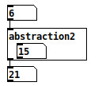
where the patch “abstraction2.pd” contains:
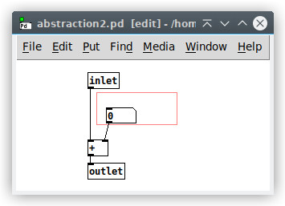
Here, the number box in the abstraction shows up on the box that invoked the abstraction. The “graph on parent” flag is set in the abstraction (and is saved as part of the abstraction); to set it, open the “properties” dialog for the “abstraction2” canvas by right-clicking on any white space in the patch.
To open the subpatch, right click on the object and select “open”. (On Macintoshes without a 2-button mouse, you can double-click in edit mode instead.) It doesn’t work just to click on the object in run mode since clicks are sent to visible controls and/or arrays.
When the sub-patch is closed, all controls in it appear on the object instead; so the number box in the sub-patch in the example above is the same one as you see in the box. Only controls are made visible in this way
numeric arrays
Linear arrays of numbers recur throughout the computer musician’s bag of tricks, beginning with the wavetable oscillator. The wavetable oscillator later was reinvented as the looping sampler. Also, table lookup is used for nonlinear distortion of audio signals. In the domain of control, arrays of numbers can specify control mappings, probability densities, voicing data, and much more.
Arrays in Pd should be allocated (and possible read in from a file) before beginning to make sound, since memory allocation and disk operations may take long enough to cause audio buffer overruns or underruns. Pd provides two ways to define new arrays, as “graphs” and “tables”. In either case the array has a pre-defined name and size (i.e., number of points). Elements of the array are stored as floating-point numbers, 4 bytes apiece
If you use an array to store a one-second sound at 44.1 kHz you will need 176 kilobytes, or a one-minute sound, 10.6 megabytes. To store a sound with two or more channels, use a separate array for each channel.
Arrays are also useful as transfer functions, for example for nonlinear distortion of an audio signal, or to map a control onto a synthesis parameter. In situations like this one typically uses much shorter arrays, of no more than a few hundred elements. They are also useful for storing measured spectra derived from the fft~ objects, and probably for many other uses.
Arrays usually appear within subpatches created to house them, whether in “graph on parent” form (so that you see them within a rectangle drawn on the containing patch), or as a regular subpatch (which you see as a text box.) In the “graph on parent” form, an array appears as shown:
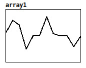
Arrays are indexed from 0 to N-1 where N is the number of points in the array. You can read an array value using the tabread object:
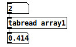
Here we see that the third point of the array (index 2) has the value 0.4. To write into the array you can use the tabwrite object:
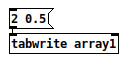
In this example, sending the message sets the third element to 0.5. (You may also send the two numbers to the two inlets separately.)
The two previous examples showed control operations to read and write from and to arrays. These may also be done using audio signals. For example, the patch below creates a 440 Hz. tone with “array1” as a waveform:
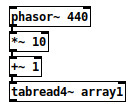
Here phasor~’s outputs a sawtooth wave, repeating 440 times per second, whose output range is from 0 to 1. The multiplier and adder adjust the range from 1 to 11, and then the values are used as indices for tabread4~, which is a 4-point interpolating table lookup module. (Much more detail is available in the audio example patches in the “pure documentation” series.)
To create a new array, select “array” from the “put” menu. Up will come a dialog window to set initial properties of the array. By default, a new graph is created to hold the array, but it may also be housed in the most recently created graph instead. Other properties may be specified there and/or changed later using the “properties” dialog.
If you select “properties” on an array in a graph, you two dialogs, one for the array and one for the graph. The array dialog looks like this:
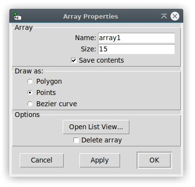
You may use this to change the name and size, in addition to another property, “save contents”. If “save contents” is selected, the array’s values are stored in the containing patch; otherwise they’re initialized to zero each time the patch is reloaded. If you intend to use arrays to store sounds, you will probably not wish to store them in the patch but as separate soundfiles. This will be more efficient, and you may also then use a sound editor to modify them outside Pd.
If you check “delete me” and then “OK”, the array will be deleted. This is an odd interface for deleting an object, and is only provided because Pd lacks a mechanism for selecting arrays (so that “cut” could serve).
The graph dialog (which also pops up) is shown here:
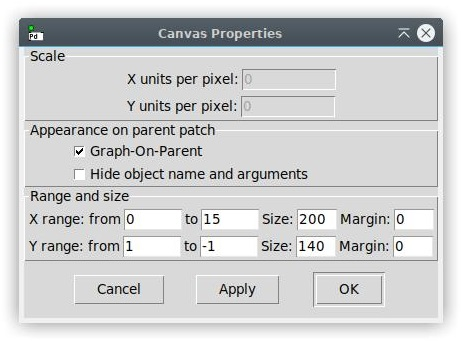
The X bounds initially range from 0 to the number of points in the table minus one (this is a good choice for arrays, although graphs holding other kinds of objects might require other X bounds.) The Y bounds should be chosen to reflect the natural range of the table, so that stored sounds would naturally range from -1 to 1, but a sequence of frequency values might range from 0 to 20,000. Finally, you choose the screen size of the graph, width and height, in screen pixels.
Many other operations are defined for arrays; see the related patches in the tutorial (starting at 2.control/15.array.pd) for more possibilities.
Data structures
(Note: this section is adapted from an article submitted to ICMC 2002.)
The original idea in developing Pd was to make a real-time computer music performance environment like Max, but somehow to include also a facility for making computer music scores with user-specifiable graphical representations. This idea has important precedents in Eric Lindemann’s Animal and Bill Buxton’s SSSP. An even earlier class of precedents lies in the rich variety of paper scores for electronic music before it became practical to offer a computer-based score editor. In this context, scores by Stockhausen ( Kontakte and Studie II) and Yuasa (Toward the Midnight Sun) come most prominently to mind, but also Xenakis’s Mycenae-alpha, which, although it was realized using a computer, was scored on paper and only afterward laboriously transcribed into the computer.
Pd is designed to to offer an extremely unstructured environment for describing data structures and their graphical appearance. The underlying idea is to allow the user to display any kind of data he or she wants to, associating it in any way with the display. To accomplish this Pd introduces a graphical data structure, somewhat like a data structure out of the C programming language, but with a facility for attaching shapes and colors to the data, so that the user can visualize and/or edit it. The data itself can be edited from scratch or can be imported from files, generated algorithmically, or derived from analyses of incoming sounds or other data streams. Here is one simple example of a very short musical sketch realized using Pd:
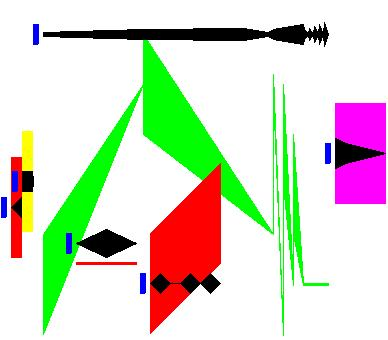
The example, which only lasts a few seconds, is a polyphonic collection of time-varying noise bands. The graphical “score” consists of six objects, each having a small grab point at left, a black shape to show dynamic, and a colored shape to show changing frequency and bandwidth. The horizontal axis represents time and the vertical axis, frequency (although, as explained later, this behavior isn’t built into pd). The dynamic and frequency shapes aren’t constrained to be connected or even to be proximate, but since they pertain to the same sound their horizontal positions line up. In this example the last (furthest-right) object is percussive (as seen by the black shape) and has a fixed frequency and bandwidth, whereas the large, articulated shape in the center has a complicated trajectory in both frequency and dynamic. The color of the frequency trace determines the voice number used to realize it.
Each object is thus composed of a combination of scalar values (color; aggregate position in X and Y coordinates) and array values (time/value pairs for the black traces and time/frequency/bandwidth triples for the colored ones.) This is all specified by the user using Pd’s “template” mechanism.
Here is the template associated with the graphical objects shown above:
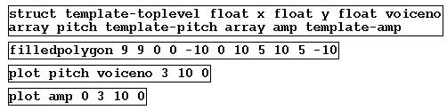
Templates consist of a data structure definition (the “struct” object) and zero or more drawing instructions (“filledpolygon” and “plot”). The “struct” object gives the template the name, “template-toplevel.” The data structure is defined to contain three floating point numbers named “x”, “y”, and “voiceno,” and two arrays, one named “pitch” whose elements belong to another template named “template-pitch,” and similarly for the array “amp.”
In general, data structures are built from four data types: scalar floats and symbols, arrays (whose elements share another, specified template) and lists (whose elements may have a variety of templates). The contents of a Pd window themselves form a list. Pd’s correlate of Max’s “table” object is implemented as a top-level array whose elements are scalars containing a single floating-point number.
Data structures in Pd may nest arbitrarily deeply using the array and list types. For example, a collection of sinusoidal tracks from an analysis engine could be implemented as an array of arrays of (pitch, amplitude) pairs; this appears as example 12 in Pd’s FFT object online tutorial.
After the “struct” object in the template shown above, the remaining three objects are drawing instructions , first for a rectangle (“filledpolygon”), and then for two arrays. The various graphical attributes that are specified for drawing instructions may be numerical constants or data structure field names; in the latter case the value varies depending on the data. For instance, the second creation argument to “plot” is the color. The first “plot” plots the “amp” field and the color is given as 0, or black. The second one plots “pitch” using the color “voiceno”. In this way the color of the second trace is attached to the “voiceno” slot in the data structure, so that color will vary according to its “voiceno” slot.
Traversal
Pd objects are provided to traverse lists and arrays, and to address elements of data structures for getting and setting. Here is a patch showing how these facilities could be used, for example, to sequence the graphical score shown above:
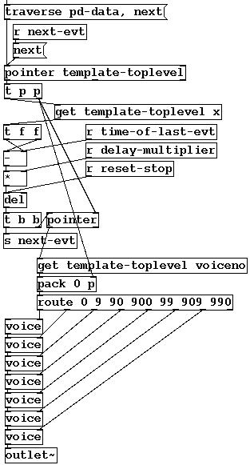
Pd has no built-in sequencer, nor even any notion that “x” values should be used as a time axis. (However, a “sort” function is provided, which reorders a list from left to right, on the assumption that users might often want to use Pd data collections as x-ordered sequences.) Recording sequences of events into lists, and/or playing the lists back as sequences, are functionalities that the user is expected to supply on top of Pd’s offerings, which, it is hoped, would allow those functionalities within a much larger range of possibilities, to include random re-orderings of events, score following, self-modifying scores, reactive improvisation, and perhaps much more.
Traversal of data is made possible by adding a new type of atom, “pointer”, to the two previously defined types that make up messages (numbers and symbols). Unlike numbers and symbols, pointers have no printed form and thus can’t be uttered in message boxes. Traversal objects such as “pointer” and “get” (among several others) can generate or use pointers. The pointer data type is also integrated into pipe-fitting objects such as “pack”, “unpack”, and “route”.
In the patch shown above, the topmost “pointer” object holds a pointer to the next object to “play” (by sending it to one of the “voice” abstractions at bottom.) The pointer object takes a “traverse” message to set it to the head of the list (named “pd-data”), and “next” messages to move to (and output) the next datum in the list (i.e., the next in the list of six objects in the score). Another “pointer” object is also used, further down, as a storage cell for pointers just as “float” is for numbers.
The center of any sequencer is always the “delay” object, which must be fed the time difference between each event (including the non-event of hitting “start”) and the next. As we extract each of the six objects in the score, we must wait the delay for playing that object, and then send its pointer to one of the “voice” abstractions to play it. However, we have to inspect the object itself to know the delay before playing it. So, in the loop, we peel off the first remaining object to play and inspect the time difference between it and the previous one, using this value to set the delay, but also storing the pointer in the lower “pointer” and “pack” objects.
The time difference needed to set the delay object is obtained using the “get template-toplevel x” object. (This is converted to incremental time (”-"), corrected for tempo, and fed to the delay.) Pd provides the “get” and “set” objects for reading and writing values from data structures. The two “get” objects shown here obtain the “x” and “voiceno” fields of the current object. The template name (template-toplevel) is supplied to the “get” objects so that they can look up the offset of the necessary field(s) in advance, for greater run-time efficiency.
Once the delay has expired, the object’s pointer is recalled (the lower “pointer” object), and the voice number is recalled. This is packed with the pointer itself and routed, so that the pointer goes to the appropriate voice. The voice number is shown as the color of the frequency trace in “999” units (first digit red, second green, third blue) and the “route” is arbitrarily set up to select among the six primary and secondary colors plus black.
The details of extracting the pitch and dynamic breakpoints from the arrays defined in the template are managed in the “voice” abstraction. The “voice” abstraction receives a pointer to a given object and manages the sequencing of the arrays; so it contains two sequencers itself. The nesting of the overall structure of the sequencer patch mirrors the nesting of the original data structures. Finally, the voice abstraction puts its audio output on a summing bus.
More general patches can easily be constructed which access heterogeneous lists of objects (having different templates). In this way, an arbitrarily rich personal “score language” can be developed and sequenced.
Accessing and changing data
In general, accessing or changing data is done via “pointers” to “scalars”. Numbers and symbols within scalars are accessed using the “get” object and changed, in the same way, using “set”. Since lists and arrays are composed of scalars, every actual number or symbol in a data heap will be a number or symbol element of some scalar. To access them, it suffices to have objects to chase down elements of lists and arrays (given either a global name or a pointer to the containing scalar).
Lists are traversed in the way shown above; to get to a sublist of a scalar, the “get” object will provide a pointer, in the same way as it provides “float” or “symbol” elements of scalars. For arrays, an “element” object is provided which, given a scalar, a field name and a number, chases down the numbered, scalar, element of the named array field.
To alter “float” or “symbol” elements of scalars is straightforward using the “set” object, but arrays and lists can’t be set by assignment; there is no suitable data type available within messages. Lists could possibly be “settable” by passing pointers to other lists, but permitting this would have required either automatically doing deep copies of data structures to carry out the assignments, or else implementing a garbage collecting memory management system, either of which would be difficult to realize within real-time computation time constraints. Instead, all the data hanging from a scalar is considered as belonging to that scalar, and is left in memory until the scalar is deleted; the data may be changed atom by atom, but primitives are not provided which would imply unpredictable execution times.
The “getsize” and “setsize” objects are provided to access or change the number of elements in the array. For lists, an “append” object appends a new scalar for a given template to a list, after the element pointed to. (To insert a scalar at the beginning of a list, the pointer can be set to the “head” of the list, a formal location before the first list item.) Deletion is less flexible; the only operation is to delete an entire list. (There’s no reason not to provide finer-grain deletion mechanisms except that it’s not clear how to protect against stale pointers efficiently, except by voiding the entire collection of pointers into a list.)
Editing
The graphical score shown above can be edited by dragging breakpoints, or by adding and deleting them, using mouse clicks. Also, entire objects or collections of them may be copied, pasted, and dragged around the screen. Alternatively, there is an editable (or computer generate-able or parse-able) text representation for the data, which may be seen or changed in a dialog window or read and written to external text files.
Since the graphical presentation of data objects is determined by drawing instructions, the drawing instructions are interpreted backwards to alter data as a result of mouse operations. If a given graphical dimension is controlled by a variable, that variable is then controlled by dragging along that dimension; if the dimension is constant, it can’t be altered by dragging.
Tricky situations can arise when the user changes the contents of templates. A change in drawing instructions can be accommodated by simply tracking down and redrawing all data objects using the template. However, changing the “struct” object itself make for less straightforward situations. The user might wish to reorder fields, delete them, add new ones, or rename them. When a “struct” object changes, Pd automatically conforms the data from the old structure to the new one. Fields with the same name as previously are maintained (reordering them as necessary); and if a field disappears but another of the same type appears, the new one(s) are taken to be renamings of the old one(s) in order of appearance. New fields which cannot be matched in this way with previously existing ones are assumed to be new and are initialized.
It can happen that two “struct” objects compete to define the same data structure, or that the user reads in data from a file which expects a different version of the structure, or alternatively, that the “struct” object for existing data objects disappears. For this reason, Pd maintains a private representation of the last active version of a “struct” until all similarly named “structs,” as well as all data using that “struct”, have disappeared. If the user introduces a new version of the “struct” and only later deletes the “current” one, the data is only conformed to the new version once the old one is deleted. In this way we avoid getting into situations where data is left hanging without its structure definition, or where data ends up belonging to two or more structures of the same name. The worst that can happen is that data may lose their drawing instructions, in which case Pd supplies a simple default shape.
Limitations
When examples get more complicated and/or dense than the one shown here, it becomes difficult to see and select specific features of a data collection; more work is needed to facilitate this. There should be some facility for turning drawing instructions on and off, or perhaps for switching between versions of a template, depending on the user’s desired view. There should also be a callback facility in the template for when an object is edited with the mouse, so that the user can bind actions to mouse clicks.
More generally, the collection of traversal objects that Pd provides is adequate to support a variety of modes of data collection and use, such as analysis and sequencing. But the patches required to traverse the data collections are not always simple. It would be desirable to find a more straightforward mechanism than that provided by the “pointer”, “get” and “set” objects.
The “data” facility, although part of the original plan for Pd, has only recently been implemented in its current form, and as (hopefully) the user base grows there will surely be occasions for many further extensions of the data handling primitives and the graphical presentation and editing functions.